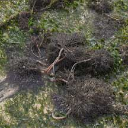
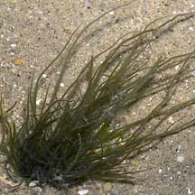
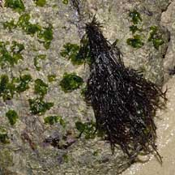
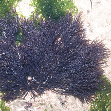

|
|
|
red
seaweeds text index
| photo index
|
| Seaweeds > Division Rhodophyta |
| Agar-agar
red seaweeds Gracilaria sp.* Family Gracilariaceae updated Jan 13
Where seen? These rather succulent red seaweeds are commonly seen on many of our shores. On boulders, coral rubble as well as on abandoned ropes, nets and other objects left on the shore. Features: Some may form loose bunches of slender, cylindrical 'stems' about 15-20cm long. Each 'stem' has a few slender side branches that taper at the tips. Red, brownish or blackish. Sometimes green. Others form dense bunch of many slender, cylindrical 'stems' about 5-10cm long. Each 'stem' branches many times into short slender side branches with tapering tips. Black, maroon sometimes purplish. According to AlgaeBase: There are more than 180 current Gracilaria species. The species are difficult to differentiate based on external features alone. Except for Knobbly agar-agar red seaweed (Gracilaria salicornia) with distinctive club-shaped segments. Some other species found on our shore that resemble Gracilaria include Hydropuntia edulis which also belongs to Family Gracilariaceae Human uses: The Gracilaria species are a major source of food-grade agar. The seaweed is both harvested from the wild and farmed for commercial applications. On farms, they are grown on ropes. A wide range of Gracilaria species have commercial uses. About 30,000 tons of Gracilaria species are produced a year, one-third of this from South America. China was one of the first countries to cultivate Gracilaria species. History of agar-agar: Freezing removes impurities from the agar-agar. According to Japanese folklore, an innkeeper tossed out some leftover jelly during the winter. This froze at night then thawed the following day. The innkeeper came across the resulting white substance several days later. When he boiled it, he found that it produce a whiter jelly than the original. Thus was the method of agar production accidentally discovered. Agar-agar was known in Japan and China for centuries, as a sweetened or flavoured gel, and was called 'kanten' by the Japanese and 'dongfen' by the Chinese. It is said that Chinese migrants brought it to South East Asia. 'Agar-agar' is the Malay name for it, a name which even the Chinese in South East Asia used. When the Europeans (via the Dutch) brought it to Europe it was called 'agar'. Thus a Japanese product came to have a Malay name! In 1882, the use of agar as a medium to culture bacteria was made famous by experiments on the tuberculosis bacteria. Besides Gracilaria, other species used to produce commercial agar-agar include Ahnfeltiopsis, Gelidium, Gelidiella, Pterocladiella and Pterocladia. |
 Many bunches growing on an abandoned net. Chek Jawa, Jul 02  Loose clusters of long 'stems'. Tanah Merah, Apr 05  Denser bunches of short 'stems'. East Coast, Jun 06 |
|
 Pulau Sekudu, Oct 11 |
*Seaweed species are difficult to positively identify without microscopic examination.
On this website, they are grouped by external features for convenience of display.
| Agar-agar red seaweeds on Singapore shores |
| Photos of Agar-agar red seaweeds for free download from wildsingapore flickr |
| Distribution in Singapore on this wildsingapore flickr map |
| Family Gracilariaceae recorded for Singapore Pham, M. N., H. T. W. Tan, S. Mitrovic & H. H. T. Yeo, 2011. A Checklist of the Algae of Singapore.
|
Links
|
|
|